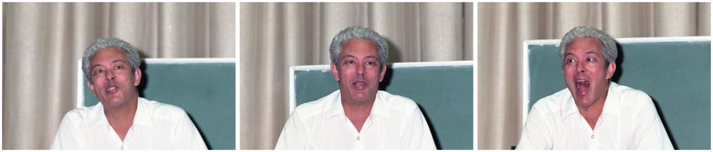
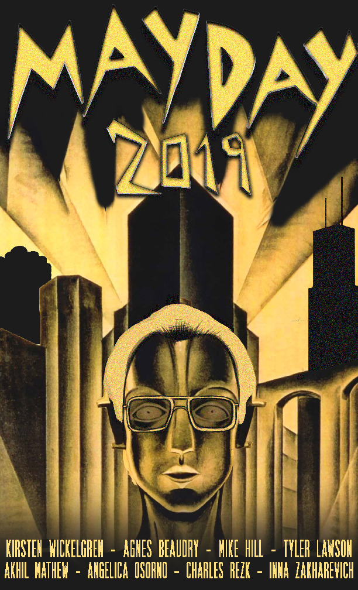
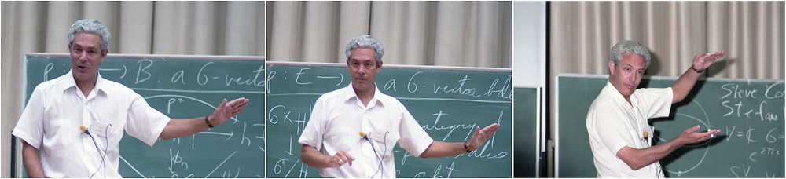

Friday, October 4 – Sunday, October 6

The Fall 2019 meeting of the Midwest Topology Seminar, to be held at the University of Chicago, will celebrate Mayday 2019, a conference in honor of Peter May on the occasion of his 80th birthday.

Schedule
All talks will be in Kent 120 (map)
See the talks tab for detailed schedule with titles and abstracts.
- Friday colloquium: Kirsten Wickelgren, 4pm
- Saturday talks 9:00 -- 11:30 and 1:30 -- 5:00
Mathew, Osorno, Rezk, Beaudry, Lawson - Sunday talks 9:00 -- 11:30
Zakharevich, Hill

Banquet Saturday, October 5
The banquet for the Midwest Topology Conference in honor of Peter May's 80th birthday will take place in downtown Chicago. You can get there from Hyde Park via taxi/rideshare or public transportation.
Please RSVP with this Google form by Wednesday, September 25 if you plan to attend.
UPDATE: On account of impregnable space limitations and Peter May's unbounded popularity, the banquet is now at capacity. We hope, however, to replace each cancellation with a late registrant, so:
- if you are interested in coming, please RSVP on the Google form and you will be added to the waitlist, and
- if you are no longer able to attend, please let us know so someone else can fill your seat.
Time: 6-10pm
Place: Hyatt/Aloft Chicago Downtown River North
515 N Clark St, Chicago, IL 60654 (map)
The dinner will be buffet style and will feature both vegetarian and non-vegetarian Indian dishes from Peter's favorite restaurant, India House.
There will be a cash bar on site.
Organizers
Contact the organizers if you have any questions, special requests, etc.
The photos of Peter are courtesy of Atsushi Yamaguchi, from the Toda 60 conference, August 1988; more photos at the link!
Financial support provided by the National Science Foundation, the University of Chicago, the University of Pennsylvania, and Johns Hopkins University.